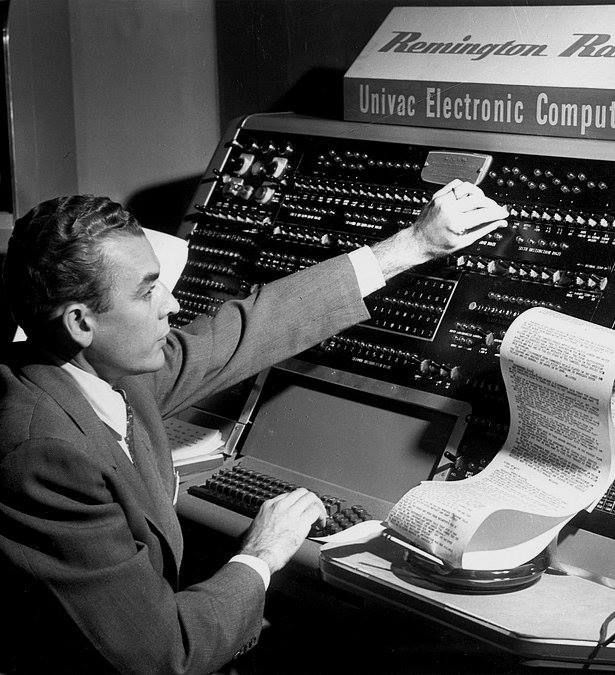
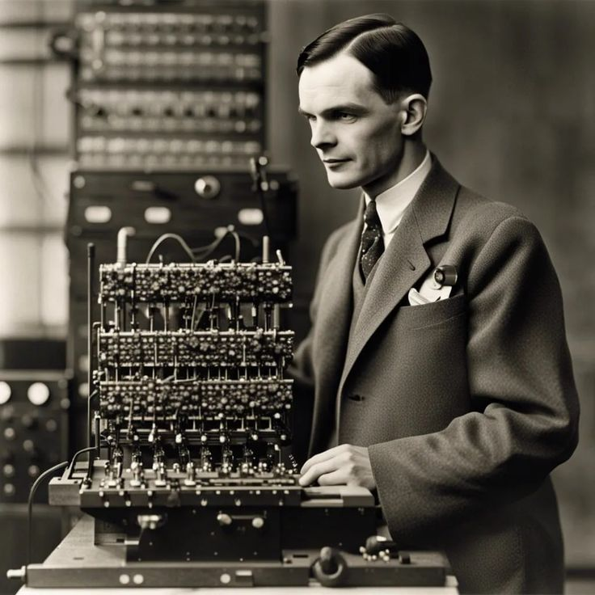
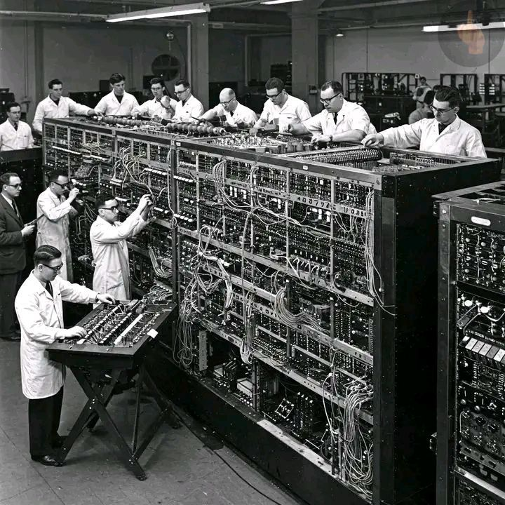
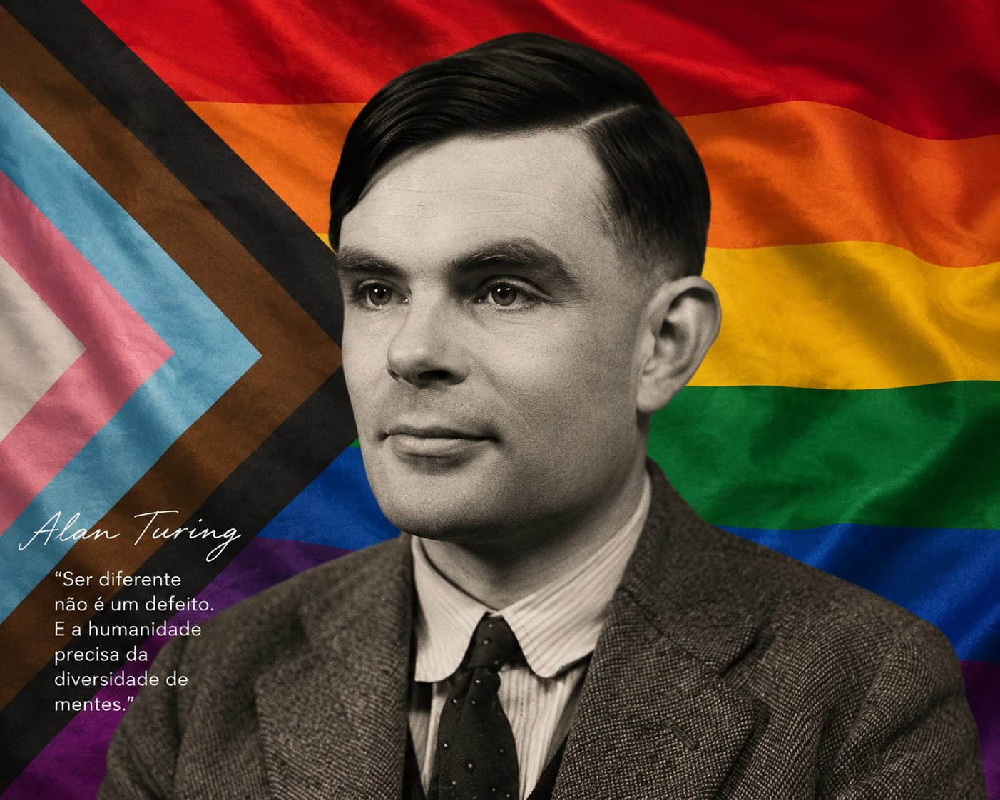

Durante a Segunda Guerra Mundial, Alan Turing trabalhou na quebra dos códigos secretos da máquina Enigma, utilizada pela Alemanha Nazista. Ele ajudou a desenvolver máquinas capazes de decifrar mensagens militares secretas, permitindo antecipar ataques inimigos e auxiliar as estratégias dos Aliados.
Esse trabalho foi considerado fundamental para a vitória dos Aliados na guerra e contribuiu para salvar milhões de vidas. Sua abordagem para quebrar a criptografia nazista envolveu passos estruturados que mudaram a história da computação:Estudo das falhas da Enigma: A máquina alterava suas configurações todos os dias, mas nunca permitia que uma letra fosse codificada por ela mesma. Turing usou essa fraqueza matemática para eliminar rapidamente combinações erradas.A "Bombe": Baseada em estudos prévios de matemáticos poloneses, Turing aprimorou o conceito criando um dispositivo colossal que acelerou a busca por "chaves" diárias.Impacto Militar: A decifração originou a inteligência conhecida como Ultra. Historiadores estimam que o trabalho de Turing encurtou a guerra em anos e salvou milhões de vidas.

Alan Turing também realizou estudos sobre a possibilidade de máquinas apresentarem comportamentos semelhantes ao pensamento humano. Em 1950, criou o Teste de Turing, um método usado para avaliar se uma máquina consegue imitar respostas humanas durante uma conversa sem que uma pessoa perceba a diferença.
Essas pesquisas foram fundamentais para o avanço da Inteligência Artificial, influenciando o desenvolvimento de sistemas capazes de aprender, responder perguntas e tomar decisões de forma automatizada. A ideia é simples: Um avaliador humano conversa, por texto, com dois interlocutores ocultos: um humano e uma máquina. Se o avaliador não conseguir distinguir com segurança qual é a máquina, diz-se que a máquina “passou” no teste. Em outras palavras, o foco não é se a máquina “pensa” de verdade, mas se ela se comporta de forma indistinguível de um humano em uma conversa.

A Alan Turing criou a ideia da Máquina de Turing em 1936 como um modelo matemático para representar o funcionamento de um computador. Ela consistia em uma fita infinita com símbolos, uma cabeça de leitura e escrita e um conjunto de regras lógicas capazes de executar instruções passo a passo.
Mesmo sendo apenas um conceito teórico, a Máquina de Turing demonstrou que uma máquina poderia resolver problemas automaticamente ao seguir algoritmos e programas. Essa ideia se tornou a base da Ciência da Computação moderna e influenciou diretamente o desenvolvimento dos computadores atuais.Ela não era uma máquina física real, mas uma ideia abstrata usada para estudar os limites da computação. Os principais componentes são: Uma fita infinita dividida em células, onde podem ser escritos símbolos. Um cabeçote de leitura/escrita que lê, apaga ou escreve símbolos na fita. Um conjunto de regras (estados) que determina o que fazer a cada passo. Movimento para esquerda ou direita na fita.

Apesar de suas enormes contribuições para a ciência e para a vitória dos Aliados na Segunda Guerra Mundial, Alan Turing sofreu forte preconceito por ser homossexual. Na década de 1950, a homossexualidade era considerada crime no Reino Unido, e Turing acabou sendo denunciado e julgado por sua orientação sexual. Mesmo sendo reconhecido como um dos maiores matemáticos da época, ele foi tratado de forma injusta pela sociedade e pelo governo britânico.
Como punição, Alan Turing foi obrigado a realizar um tratamento hormonal conhecido como castração química, que afetou sua saúde física e emocional. O preconceito e a discriminação que enfrentou marcaram profundamente sua vida. Anos depois, sua história passou a representar a luta contra a intolerância e a defesa dos direitos LGBTQIA+, tornando Turing não apenas um símbolo da computação moderna, mas também da busca por igualdade e respeito.